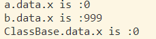

Lua实现Class遇到的一个坑
目前最常见的一种实现方式：
1 | ClassBase = { |
这种方法大多数情况下不会有问题，但是有一种情况却会导致未能预料的错误：
1 | function ClassBase:SetData() |
得到的结果是：

这就产生了意料之外的结果：修改b的数据，为什么影响到另一个实例a甚至是ClassBase的数据呢？
其实也不难解释，关键就在Class的实现方式上：
在New函数里，实例通过将父类设置为metatable和将父类的__index设置为父类本身来实现继承和简单的多态。
在ClassBase:SetData()函数里，self就是new出来的实例，self.data.x并不是单个的操作，它其实可以分成两部分，对Lua来说，它其实是这样的：
self ["data"] ["x"]。在第一部分self ["data"]，首先会self的data成员。但是self有__index方法，而没有data成员，所以lua会直接通过__index方法访问metatable中的data字段，metatable被分享了一次，而这个metatable就是ClassBase。
然后在["x"]这一部分，指向的是metatable中的data字段。
而self.data = 999 则不会有这样的问题，因为self.data是一个一次操作，而且后面紧跟着赋值操作，lua不会使用__index方法，而是使用__newindex方法，所以会触发lua默认的操作：为self（就是实例）创造一个新的成员，然后赋值，完全符合预期。
最简单的规避方法：
1 | ClassBase = { |
运行结果如图：

符合预期
此外还可以使用deepcopy的方法，但是也有一些缺点，不再赘述。